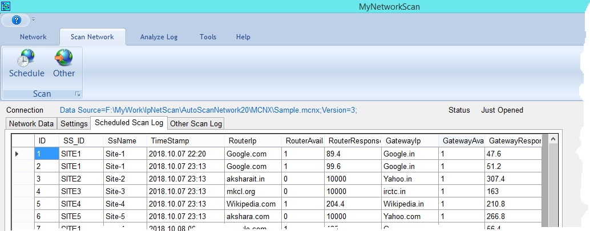

When we scan the network; for each IP address of router and gateway ping trial taken for 5 times and average of successes is measured. Hence if we got success for 3 times for a particular router or gateway; its availability will be 3/5 = 0.6 (or 60%). Also average response time of all such gateway and router measured and logged. See the above screenshot for availability and response time. If the computer time is as per scheduled time for scanning then only possible to do the scheduled scan otherwise error message will be get displayed. We can do other than scheduled scanning at any time but its logging get generated in a separate table. We can do analysis for scheduled scan log using analysis tools of this application.